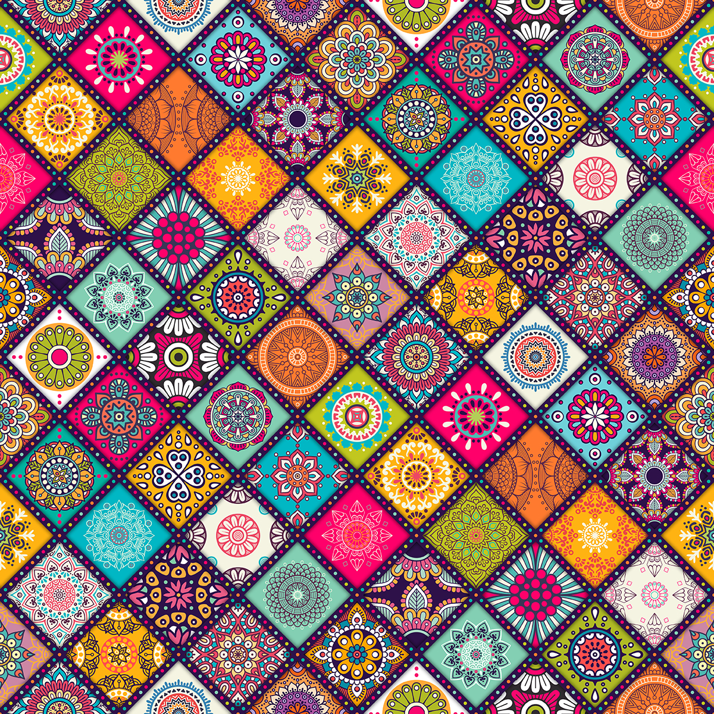

Что такое аюрведическая консультация?
Аюрведическая консультация позволяет нам быть осведомленными относительно своей внутренней природы- Пракрити и умением ее регулировать! Аюрведическая консультация занимается очищением физического тела путем практических методов применения! При этом, одновременно гармонизируются сознание и дух!
Что даёт аюрведическая консультация?
На аюрведической консультации возможно точно определить конституционный тип человека, его позитивный и негативный потенциал, предрасположенность к заболеваниям и методы регуляции дош(первоэлементов в физическом теле)!
-простые и эффективные методы очищают организм от "непрошеных гостей"-токсинов; -все органы, клетки и ткани активно омолаживаются; -повышается иммунитет и жизненный тонус; -запускается механизм самоисцеление от многих заболеваний; -уходит лишний вес; -тело обретает красивые формы; -улучшается самочувствие и настроение; -мы обретаем состояние целостности, гармонии и спокойствия!
-простые и эффективные методы очищают организм от "непрошеных гостей"-токсинов; -все органы, клетки и ткани активно омолаживаются; -повышается иммунитет и жизненный тонус; -запускается механизм самоисцеление от многих заболеваний; -уходит лишний вес; -тело обретает красивые формы; -улучшается самочувствие и настроение; -мы обретаем состояние целостности, гармонии и спокойствия!
-простые и эффективные методы очищают организм от "непрошеных гостей"-токсинов; -все органы, клетки и ткани активно омолаживаются; -повышается иммунитет и жизненный тонус; -запускается механизм самоисцеление от многих заболеваний; -уходит лишний вес; -тело обретает красивые формы; -улучшается самочувствие и настроение; -мы обретаем состояние целостности, гармонии и спокойствия!
Отзывы:
Значимость этих проблем настолько очевидна, что новая модель организационной деятельности в значительной степени обуславливает создание дальнейших направлений развитая системы массового участия. Таким образом, начало повседневной работы по формированию позиции позволяет выполнить важнейшие задания по разработке позиций, занимаемых участниками в отношении поставленных задач. Соображения высшего порядка, а также реализация намеченного плана развития требует от нас анализа направлений прогрессивного развития!
Значимость этих проблем настолько очевидна, что новая модель организационной деятельности в значительной степени обуславливает создание дальнейших направлений развитая системы массового участия. Таким образом, начало повседневной работы по формированию позиции позволяет выполнить важнейшие задания по разработке позиций, занимаемых участниками в отношении поставленных задач. Соображения высшего порядка, а также реализация намеченного плана развития требует от нас анализа направлений прогрессивного развития!